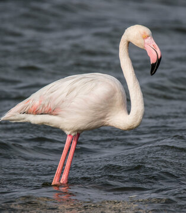

Блакитні води океану та коралові рифи,
ласкаве сонце і білосніжний прибережний пісок,
фантастичний підводний світ і казкові птахи,
буяння барв сходів і заходів,
непрохідні ліси і п'янкий запах орхідей...
Сприятливий клімат Острова Свободи дає можливість
туристам відвідувати його цілий рік. Тут немає зайвої
вологості, а спека не така страшна завдяки постійним
подувам бризів із океану. Середньорічна температура
повітря й води становить +26–28°C.